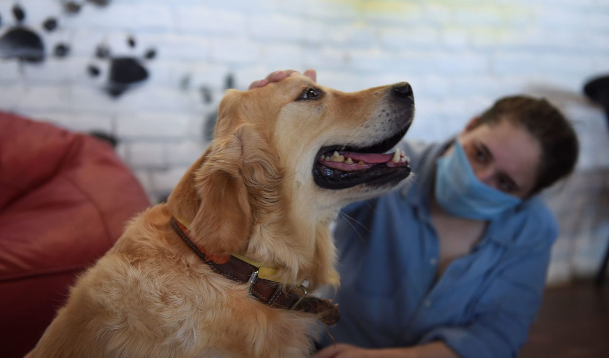

Con una precisión de casi el 94%, los perros son capaces de oler cuándo las personas están estresadas, ya que dicha condición fisiológica y emocional cambia nuestra respiración y sudor, señala un estudio de la revista Plos One a cargo de investigadores de la Universidad de Queen, en el Reino Unido.
Debido al extraordinario sentido del olfato de los perros, a su estrecha historia de domesticación y su uso para apoyar condiciones psicológicas humanas como la ansiedad, los ataques de pánico y el trastorno de estrés postraumático (TEPT), los investigadores se preguntaron si los perros podrían sentir señales químicas para responder a los estados psicológicos de sus dueños.
Detectar el estrés de las personas
Para ello, recolectaron muestras de aliento y sudor de personas no fumadoras que no habían comido ni bebido antes ni después de una tarea aritmética de ritmo rápido, para comprobar los niveles de estrés a partir de algunas medidas fisiológicas objetivas. Las personas que mostraron un aumento en el estrés con esas tareas experimentaron un aumento de la frecuencia cardíaca y de la presión arterial, y los perros —de diferentes razas y mezclas de razas— fueron capaces de diferenciar las muestras de las personas que habían mostrado ese estrés y las de aquellas que se habían mantenido relajadas durante la prueba.
Los autores, tras corroborar cómo detectan los perros los olores asociados a las situaciones de estrés, han subrayado que este hallazgo, además de profundizar en las relaciones entre los humanos y los perros, podría tener importantes aplicaciones para el entrenamiento de perros capaces de ayudar a personas que padecen ansiedad o un trastorno por estrés postraumático.